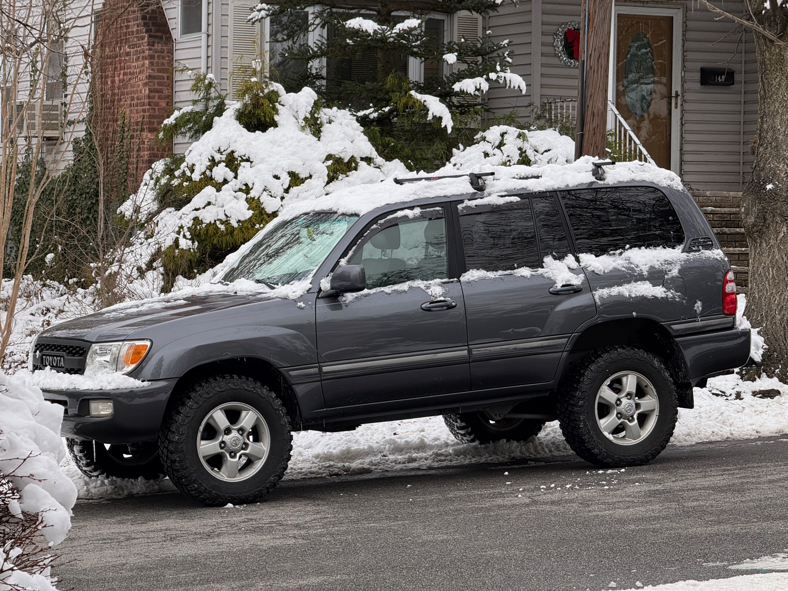

One owner. A lot of road.
She spent roughly the first 200,000 miles of her life with a single owner in Maryland—below the Rust Belt.
2004 TOYOTA LAND CRUISER · SOLD AS IS
The future of driving. Twenty-two years ago.
Now with a very honest to-do list.
$11,000 asking · Sold as is
SCROLL AROUND THE TRUCK ↓
THE BACKSTORY / FROM THE CURRENT OWNER
A long first chapter, a dealership intermission, and a very part-time second career.
She spent roughly the first 200,000 miles of her life with a single owner in Maryland—below the Rust Belt.
The dealership purchased her from that owner. Then I purchased her from the dealership. That’s the ownership story: first owner, dealer, me.
She’s spent the last seven years up here with me, barely driven. The rust you see now developed during those years. These days, she does around 400 miles a year or less.
Ownership history and rust timeline are the current owner’s account. Current mileage: approximately 220,000.
THE FEATURES. THE BUGS. THE FEATURES THAT ARE BUGS.
Sold as is. Known faults are listed openly, and an in-person inspection is encouraged. Bring a flashlight, an OBD scanner and realistic expectations.
Current owner-reported EVAP codes: P2418, P0442 and P0446. Cause, repair cost, and emissions readiness have not been confirmed.
Known rust and damage. The owner says the visible rust developed during the last seven years up here, after the truck’s Maryland years, despite very little driving. The owner reports that a mechanic found no structural issues. No written inspection report has been provided. Buyers should inspect the body and undercarriage themselves or arrange an independent inspection.
The sunroof has issues; exact behavior needs documenting. The rear spoiler is no longer present, and a piece of roof-rack paneling / trim is missing. Exact missing piece and location need a new photo.
The driver’s seat has a tear. Only the passenger heated seat works. The driver gets complimentary character development.
Radio operates, but the speakers have lost their bass. Perfect for anyone who felt their music had too much music in it.
The normal horn control does not work. A separate dashboard push button was installed as a workaround. Ask for a demonstration at viewing.
See the buttonMalone crossbars are included because the owner really doesn’t want to take them off. A rare case of laziness adding value. A 2-inch rear hitch receiver is also fitted. Historical photos may show camping accessories that are not represented as included.
This untouched export shows the Toyota-lettered grille and roof crossbars. Snow obscures parts of the body and roof; it cannot establish today’s rust condition.

The new cargo photo shows corrosion around the hatch hardware. Its source photo is in the gallery. Wider body-rust locations, the frame and underbody still need current close-ups and inspection documentation.
THE ACTUAL TRUCK / UP CLOSE
Photos from the owner’s camera roll, adjusted for presentation with loose clutter removed. Blemishes stay part of the story. Open the source photos for original condition detail.
01 / OWNER PHOTO
Current TOYOTA grille, bumper wear and fog-lamp haze. Plate characters and background clutter removed.
View source photo02 / OWNER PHOTO
4.7L V8 engine bay. Presentation edit; use the source photo for labels, fasteners and mechanical detail.
View source photo03 / OWNER PHOTO
The normal horn control does not work. An added dashboard push button is the owner’s workaround; operation should be demonstrated at viewing.
View source photo04 / OWNER PHOTO
Rear bench, seat belts and worn seatback pockets. Loose paper removed; creases and visible wear remain.
View source photo05 / OWNER PHOTO
Cabin and closed sunroof shade. The sunroof has known issues; this photo does not demonstrate operation.
View source photo06 / OWNER PHOTO
Door trim, seat and sill wear. Loose items removed from the pocket and cabin.
View source photo07 / OWNER PHOTO
BFGoodrich KM3 detail. Fitted in 2019; tread appearance does not establish tire age or roadworthiness.
View source photo08 / OWNER PHOTO
Loose cargo and bike carrier removed. Stained carpet and hatch corrosion remain visible; previously covered areas are reconstructed. Compare the source photo before assessing condition.
View source photoFROM THE FAMILY ALBUM / 2019
Before semi-retirement, she hosted a very small beachfront hotel. These are real family photos from earlier adventures.
Rooftop tent and camping equipment shown are not included. Malone crossbars are included. Historical photos show her setup at the time.
2019 / FAMILY ALBUM
August 3, 2019. Family beach camping from the owner’s album. Rooftop tent and camping equipment pictured are not included.
2019 / FAMILY ALBUM
August 24, 2019. A past adventure, with the rooftop tent in use. Tent and camping equipment are not included; Malone crossbars are included.
THE GOOD STUFF
“She was meticulously cared for. I don’t have the receipts.” — the current owner. The work below is recalled by the owner; service receipts are not available.
Old Man Emu suspension, approximately 1.5-inch lift. BFGoodrich KM3 tires fitted in the same year. Also fitted with 1.25-inch Bora spacers; their install date is unconfirmed. Low mileage doesn’t reset tire age—check date codes and condition.
Differential and transfer case oil replaced.
Exhaust replaced. Transmission cooler work around the same time; the exact cooler / coolant / service scope is unconfirmed. No receipt is available.
Timing belt done at 200,000 miles. The service date and associated work are unconfirmed; no receipt is available.
FOR THE RIGHT PAIR OF HANDS
For mechanics, handy owners and Land Cruiser enthusiasts who have ever called a repair “a fun little project.” Sold as is, with known faults. Bring your skills and inspect her in person.
View the production storyboard